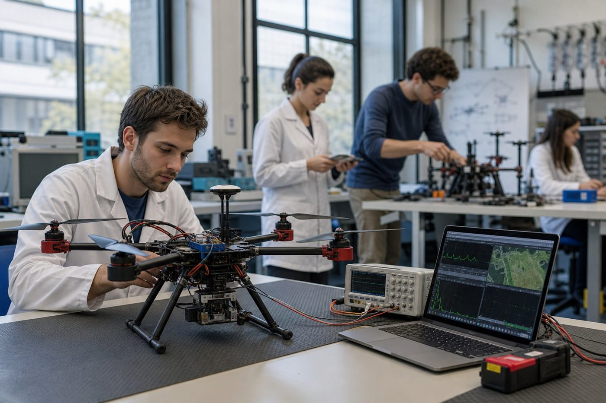
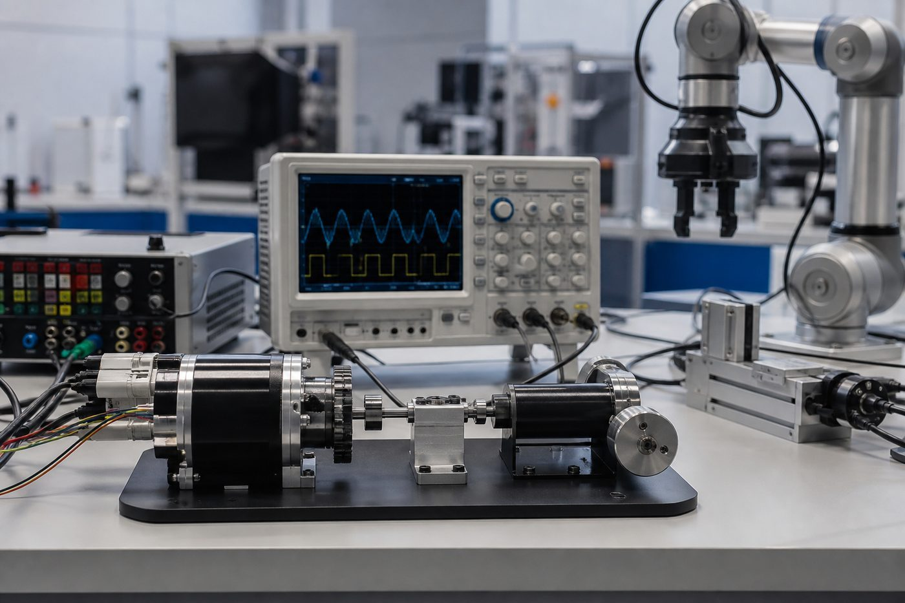

B.Eng Computer Engineering
Foundational and specialization training aligned with NUC BMAS and international best practice.
Duration: 5 years
Academic Programmes
Undergraduate and postgraduate pathways grounded in NUC BMAS, with senior-year specializations in AI, Control, and Networking Engineering.
Undergraduate
A five-year bachelor programme covering foundations in computing hardware/software systems, electronics, networks, control, and AI — with specialization choice in 400 and 500 Level.
Foundational and specialization training aligned with NUC BMAS and international best practice.
Duration: 5 years
Postgraduate
Advanced study through the School of Postgraduate Studies.
Postgraduate diploma supporting academic and professional progression into advanced Computer Engineering study and practice.
Full-time (School of Postgraduate Studies regulations apply)
Full-time study with formal coursework, seminars, and an individual research project leading to a thesis. Minimum of three semesters; maximum as prescribed by regulations.
Minimum of three semesters
Doctoral research under faculty supervision, contributing original knowledge in Computer Engineering and related specializations.
As prescribed by the School of Postgraduate Studies
400 Level & 500 Level
Students select courses from modules under one of the following specializations. Open a quick view, or read the full panels below. (Mapped from legacy labels: Artificial Intelligence; Control and Intelligent System; Computer Systems and Networks.)

Focuses on artificial intelligence with pathways in Deep Learning, Natural Language Processing, machine learning, image processing, and computer vision. Graduates design and evaluate AI-enabled systems for industry, research, and public-sector applications.
Covers control theory, intelligent systems, automation, robotics, embedded control, and drone/UAV platforms. Students gain competence in modelling, analysis, and design of feedback and autonomous cyber-physical systems.
Emphasises computer systems, networked infrastructures, network security, and scalable ICT architectures. Prepares engineers for connectivity, systems reliability, and secure digital services.
Graduates demonstrate PO1–PO12: Engineering Knowledge through Lifelong Learning, including design, investigation, modern tools, ethics, teamwork, communication, and project management. Full descriptions are on the About page.
Focuses on artificial intelligence, machine learning, intelligent computing, image processing, and computer vision. Graduates design and evaluate AI-enabled systems for industry, research, and public-sector applications.

Covers control theory, intelligent systems, automation, robotics, and embedded control. Students gain competence in modelling, analysis, and design of feedback and cyber-physical systems.
Emphasises computer systems, networked infrastructures, network security, and scalable ICT architectures. Prepares engineers for connectivity, systems reliability, and secure digital services.